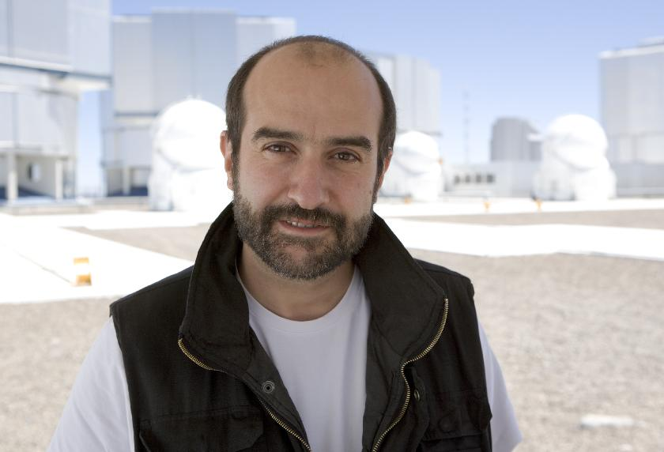

| Full name: | Olivier Raoul Waltère Jean-Pierre Marie Vivien HAINAUT |  |
| Date of birth: | September 15, 1966. | |
| Place of birth: | Montegnée, Liège, Belgium. | |
| Nationality: | Belgian. |
| Family status: | Married to Marie-Claire Rouelle,
on Septembre 9, 1989; no children. |
| Professional address: |
European Southern Observatory
Karl Schwarzschild Strasse 2 85748 Garching Deutschland Phone: +49 89 3200 6752
|
| April 1998 -- present | Astronomer at the European Southern
Observatory |
| 2016- : End-to-End Operations Scientist, Directorate of Operations. | |
| 2008-2015: Science Liaison, Education and Public Outreach Department. | |
| 2005-2008: Head of Paranal Science Operation Department | |
| 2002-2004: Head of La Silla Science Operation Department | |
| 1998-2002: La Silla,
Leader of the Team operating the 3.58m New
Technology Telescope.
Main subject of Research:
|
|
| Jul.--Aug. 1998 | Visiting astronomer at the Observatoire de Paris / Meudon, in
the DESPA group
|
| Oct. 1997 -- March 1998 | Post-doctoral fellow at the European Southern Observatory, La
Silla; 2P2Team
|
| Oct. 1994 -- Oct. 1997 | Post-doctoral fellow at the Institute
for Astronomy, University of Hawaii.
Main subjects of research:
|
| Aug. 1992 -- Sep. 1994: | ``Ph. D. Student'' at the Science Department of the European
Southern Observatory (E.S.O.), Garching bei Munchen, Germany.
Main subjects of research (under the supervision of Dr. R.M. West):
|
| July 1992 -- Aug. 1992: | Research assistant at the Institut d'Astrophysique de Liège,
Service of the Pr. Houziaux, Department of the Observers, in collaboration
with Dr. J. surdej.
|
| Oct. 1989 -- June 1992: | ``Coopérant'' at the Science Department of the European
Southern Observatory (E.S.O.), La Silla, Chile.
Main subjects of research (under the supervision of Drs. R.M. West and J. Surdej):
|
| Jul. 1989: | Astronomy and astrophysics teaching for the belgian ``Jeunesse
Scientifique'' (``scientific younth'', a nation-wide summer-school)
|
| Jan. 1989: | Full-time collaborator of Prof. A. Monfils (I.A.L. Space), calibration
and tests of the ISO satellite.
|
| Oct. 1988 -- Feb. 1989: | Fellowship from ``Fondation C. Héla'':
full-time research under supervision of Dr. J. Surdej in the group of Prof. L. Houziaux (Institut d'Astrophysique, University of Liège). Main subjects of research:
|
| Oct. 1986 -- July 1988: | Part-time collaborator of Prof. Y. Lion (University of Liège):
Research in holography and students' laboratories. |
| June 1984: | Baccalauréat C (Mathematics, Physics),
Distinction, Lycée Polyvalent de Mirecourt (France). |
| July 1988: | License in Physical Sciences (equ. Master's Degree),
La plus grande Distinction (equ. Summa cum laude), Universtité de Liège (Belgium). Thesis: Méthode de modélisation d'astéroïdes (rewarded the Prix Génard 1987-1988). |
| September 1988: | Agrégation de l'Enseignement Secondaire Supérieur
,
Distinction, Université de Liège (Belgium). |
| October 1994: | Doctorat en Science, section Physique (equ. Ph.D. in Astronomy),
La plus grande Distinction (equ. Summa cum laude) Universtité de Liège (Belgium). Thesis: Selected observational studies of minor bodies in the Solar System |
Research Related: |
|
| Astronomical Observations: | Extensive experience imaging (CCD and photographic), ultra-deep
imaging (CCD on 6m to 10m telescopes), in photometry (visible and IR
photo-electric and CCD), spectroscopy (long slit) of a broad range
of moving and non-moving objects (comets, asteroids, planets,
galaxies, quasars including gravitational lenses, extremely faint
objects as very distant comets and spacecrafts...), on many ESO
(Chile), MKO (Hawaii, USA) and BTA (Zelentchukskaja, CEI), gathered
during 15+ years as resident astronomer of major observatories.
|
| Image processing and data reduction: | Extensive experience of CCD astronomical data processing (using specialized
languages like MIDAS as well as personal FORTRAN programs), including images,
long slit spectra, photometry. Some special programs were developped to
deal with images of very faint moving objects.
|
| Computer science: | Very good knowledge of FORTRAN, scripting and programming in python, bash/csh, perl, awk, lisp, tcl-tk, etc... various specialized languages on Linux machines and exotic/vintage IBM mainframes, VAXes, UNIX workstations, PCs... Advanced Linux user. |
Other: |
|
| Management and Organization | Managing a department of ~60 people, in charge of the
operation of a the largest ground based telescope (ESO's VLT),
including organizational, staffing and budget decision, implementation
of observatory's strategies. Before that, management of departments of
35 and 20 people operating the telescopes on ESO La Silla Observatory.
Participation in the organization of large international conferences (DPS '95, 600 participants, MetSoc 97, 250 participants). |
| Languages: |
|
| Reviewer: | Astronomical Journal, Astronomy & Astrophysics, Astrophysical Journal, Earth Moon & Planets, Icarus, Planetary & Space Science, Royal Society, CONICYT, GIF... |
| Professional Society: | International Astronomical Union |
| Honors: | Genard Prize Asteroid 14972 OliHainaut |
Last Update: 2016-01-12
This is a private page: "Any view or statement made is not part of an official standpoint of ESO."